Lut Generator
Filters
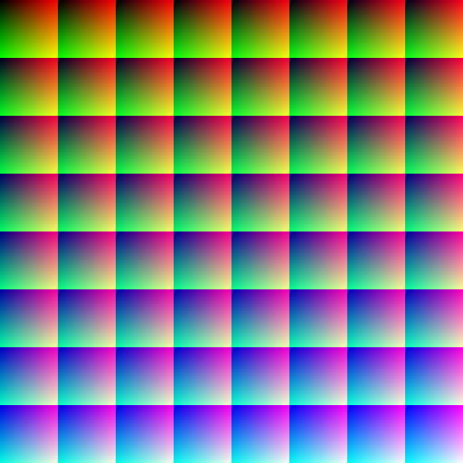
Lut Generator
Filters

Step 1
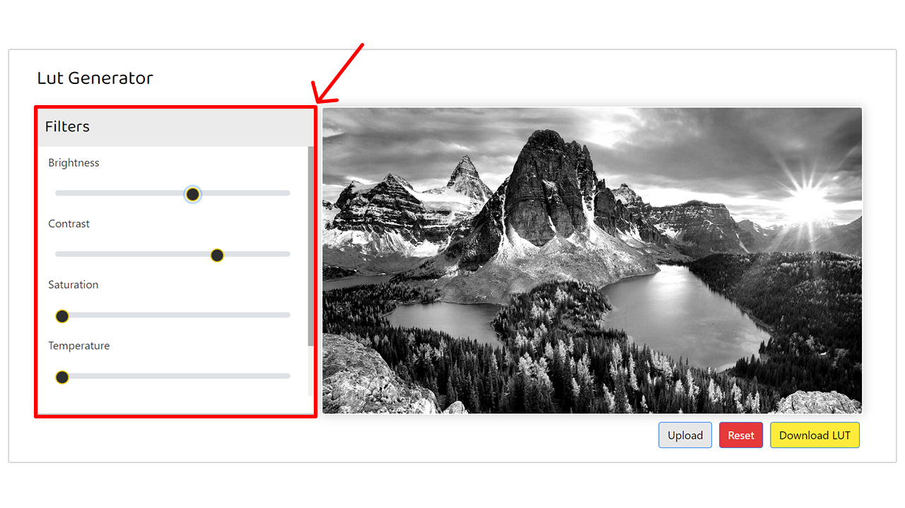The left side panel contains a set of tools that allow users to control and adjust various properties of the image. These tools include options for adjusting brightness, contrast, saturation, temperature, and hue. Users can utilize these tools to manipulate and fine-tune the appearance of the image according to their preferences.
Step 2
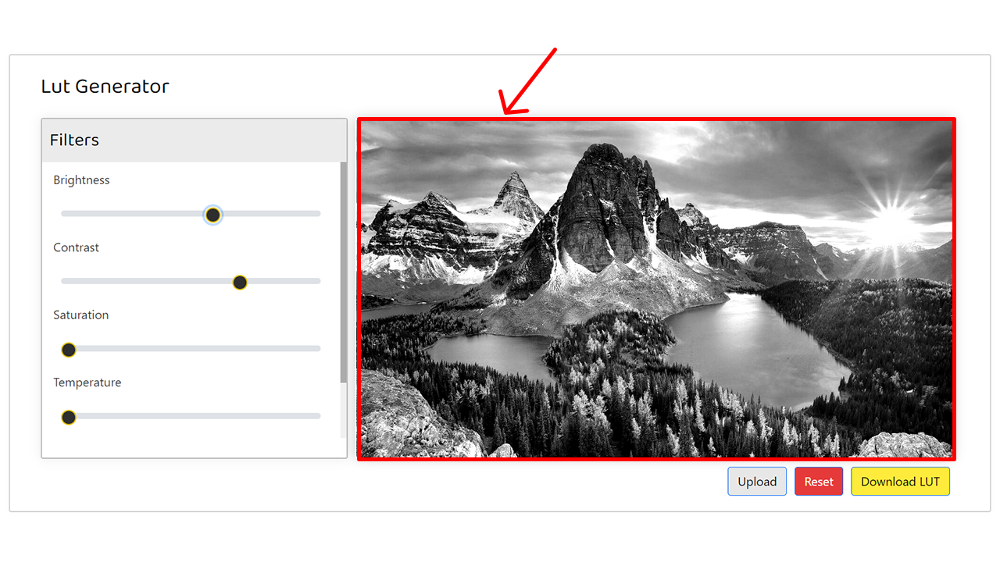The image displayed on the right side serves as a sample image that will dynamically reflect any modifications made using the tools on the left side. As you adjust the settings and properties using the tools, the image on the right side will be updated in real-time to reflect the changes you have made. This allows you to visualize and preview the effects of your edits on the image before applying them.
Step 3
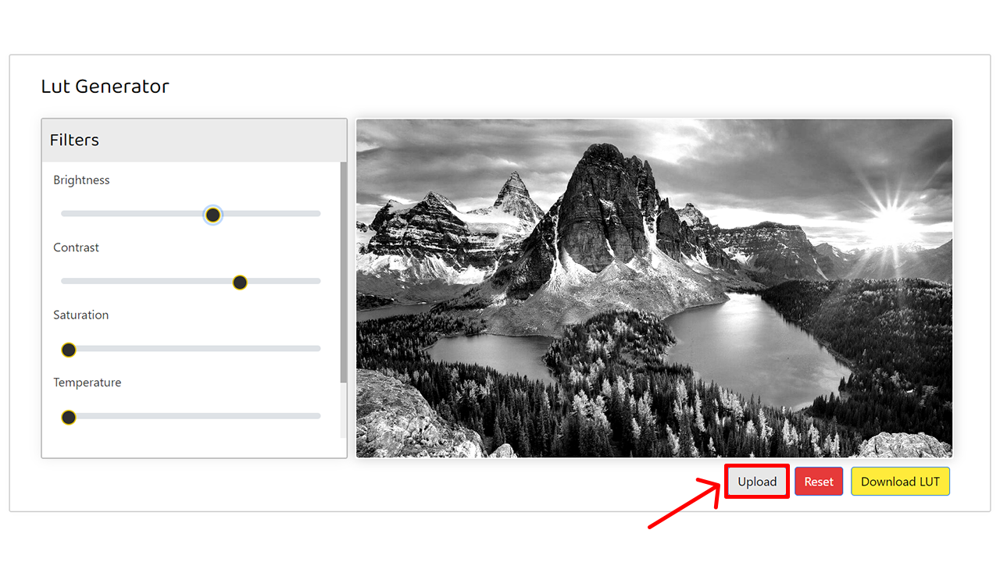You have the option to upload your own photo by clicking the upload button. This allows you to see and experience how your own image will be processed and transformed using the same editing tools. By uploading your own photo, you can get a precise preview of the final output and make adjustments accordingly to achieve the desired result.
Step 4
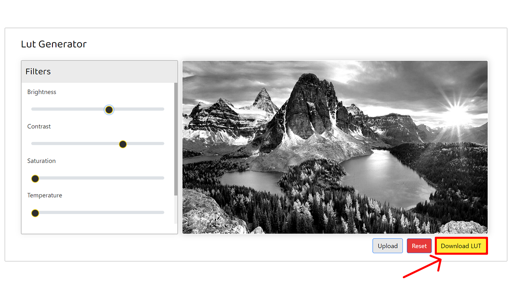Once you have made your desired adjustments, simply click the "Download LUT" button to initiate the download of the LUT file. This LUT file contains all the modifications and changes you have made to the image using the editing tools. By downloading the LUT, you can apply the same adjustments to other images or use it in software like Spark AR to enhance the appearance and visual effects of your projects.
Step 5
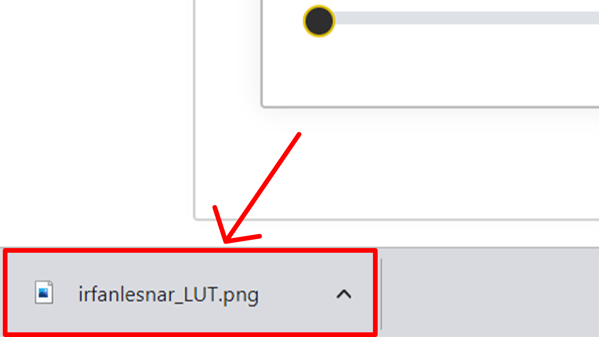Once you have downloaded the LUT file, you can proceed to open Spark AR Studio to get started. Spark AR Studio is a powerful platform that allows you to create augmented reality experiences and apply various effects to your images and videos. By importing the downloaded LUT file into Spark AR Studio, you can apply the exact modifications and adjustments you made to the image using the LUT generator. This enables you to further enhance the visual appeal and creativity of your AR projects.
Step 6
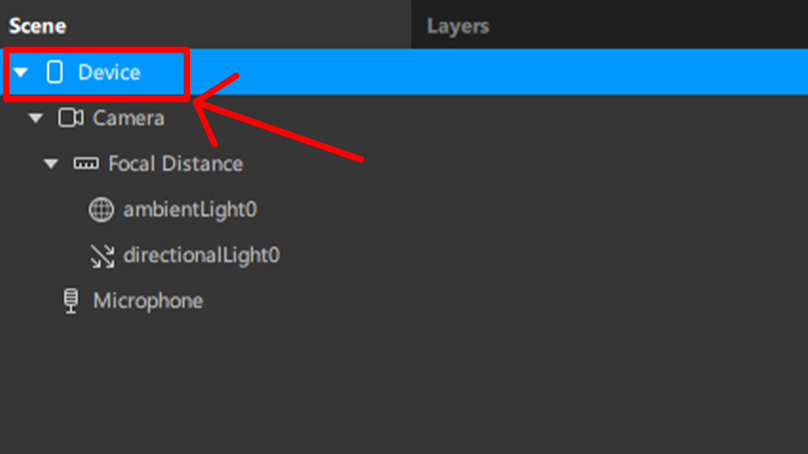In spark AR studio go to the Device tab. which will be at top left panel
Step 7
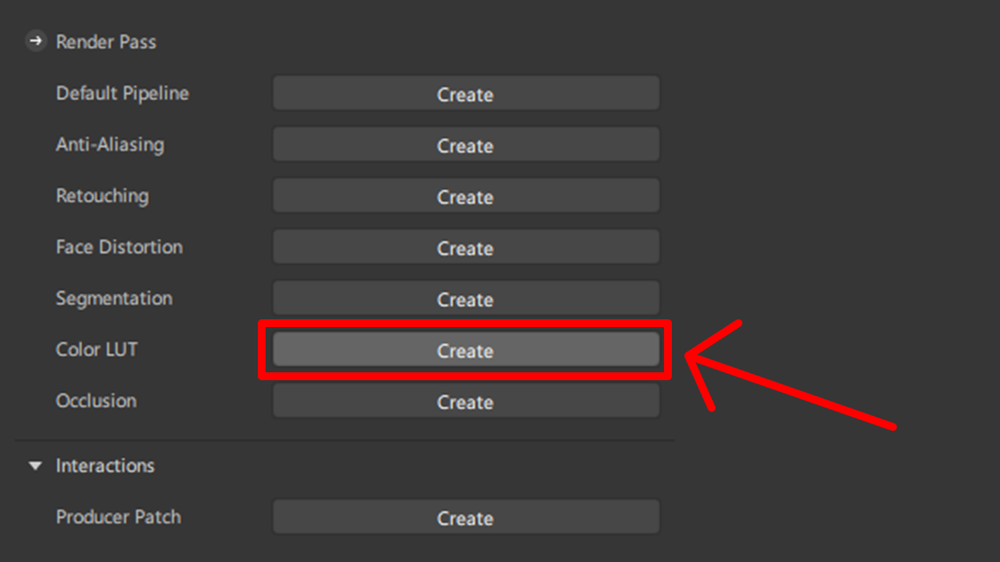By clicking device you can able to see this render pass panel on right side where you can find Color LUT. just click that!
Step 8
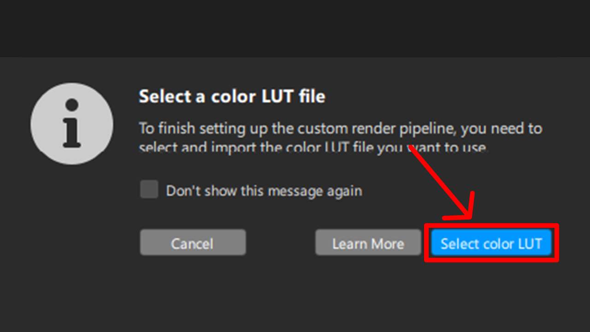Click Select color LUT button and choose the LUT which we have generated before.
Step 9
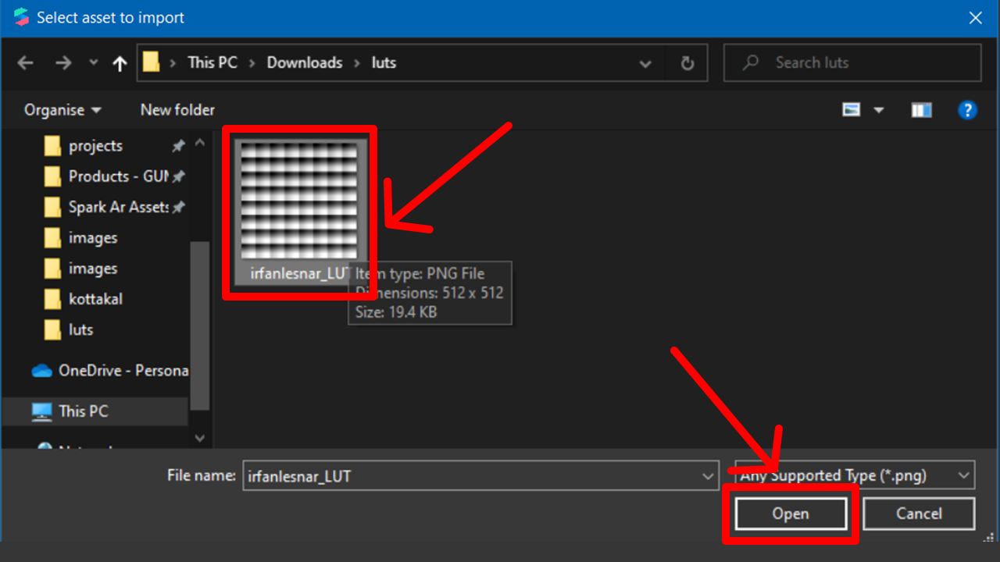Choose the LUT and click open it will open in spark AR as the LUT applied
Step 10
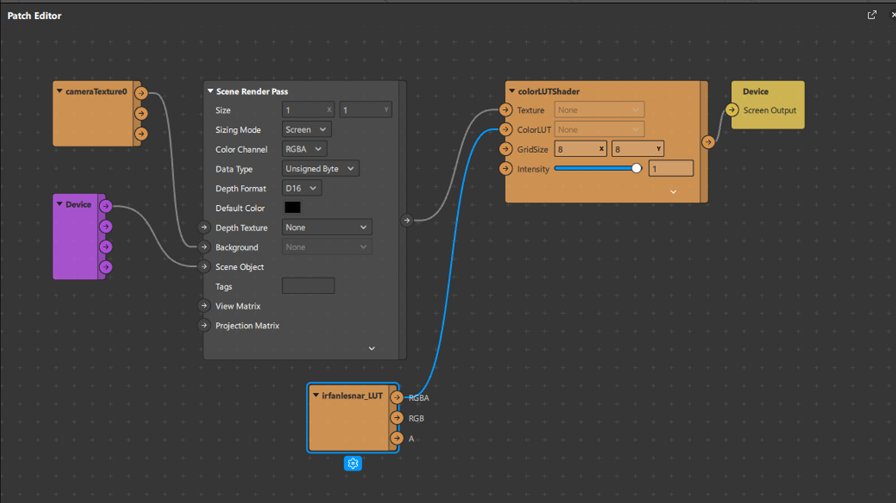In patch editor all the work will be automatically generated by spark AR.
Step 11
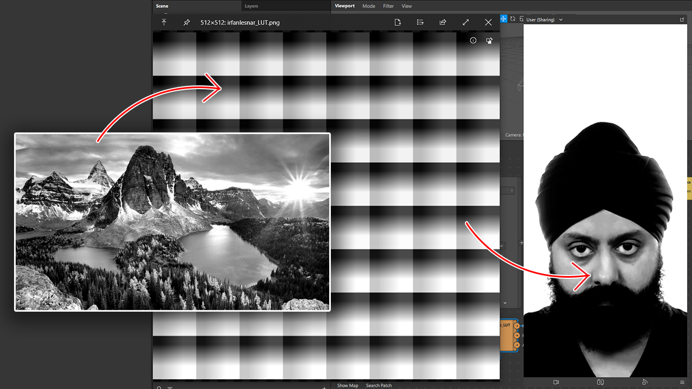Here in Spark AR Studio, you can see the output of your augmented reality effects, which reflects the exact adjustments you made in the LUT generator. The output showcases the visual enhancements and modifications you applied to the image, including changes in brightness, contrast, saturation, temperature, and HUE. By comparing the output with the original image, you can observe the impact of the LUT adjustments and ensure that the desired visual effects are achieved in your augmented reality experience.
By utilizing the LUT generator, you have the freedom to create an infinite number of unique LUTs. This allows you to craft your own distinct filters with various combinations of adjustments and effects. Each LUT represents a different visual style or aesthetic, enabling you to explore endless creative possibilities. With the ability to customize and fine-tune the parameters in the LUT generator, you can truly make your filters stand out and deliver a personalized and captivating augmented reality experience.
The LUT Generator website is a powerful online tool designed for creating customized Look-Up Tables (LUTs) for image editing and enhancing.
Users can upload their own images or choose from a selection of sample images. The website provides various editing tools to adjust the brightness, contrast, saturation, and other parameters to modify the appearance of the image.
Once the desired modifications are made, users can generate and download the LUT file specifically tailored for Spark AR. This LUT file can be imported into Spark AR Studio to apply the customized image effects to their AR projects.
Experience the LUT Generator website today and unleash your creativity to transform images into stunning visuals for your Spark AR experiences.